Is it climate change, or just a bad year?
Cassandra Signal puts each place's weather record on trial. We build 1,000 imaginary histories of what that place's record could have looked like through natural ups and downs alone, and ask whether the real record stands out from all of them. Then we keep an honest public track record: we test the method on past droughts and heatwaves, and we lock in forecasts before each season starts.
Check any place yourself → Any point on Earth, any season, any year back to 1996. Runs in your browser in a few seconds.
In Greek myth, Cassandra gave true warnings that nobody believed. Warnings get believed when the evidence can be checked and the predictions were written down first.
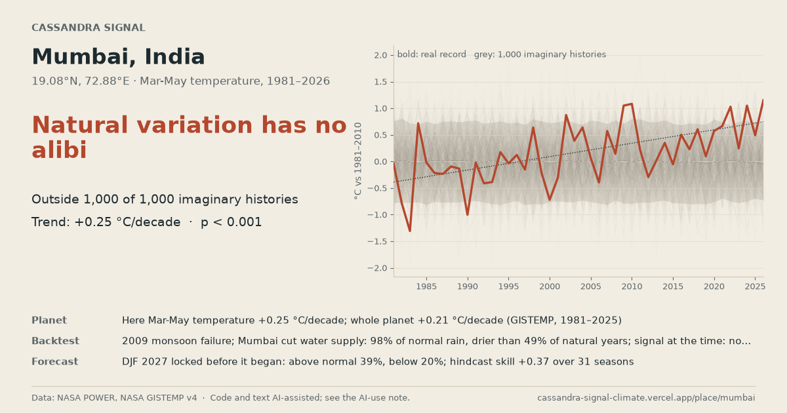
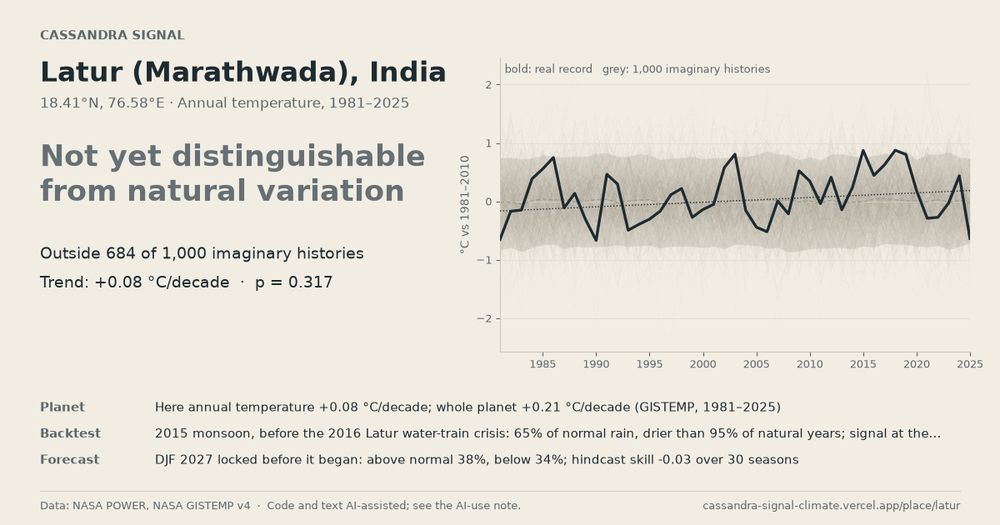
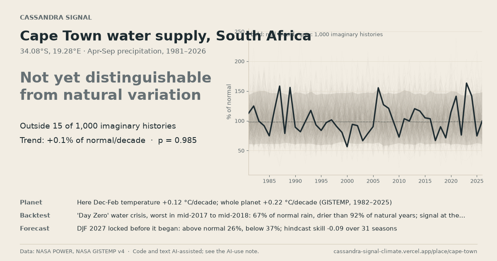
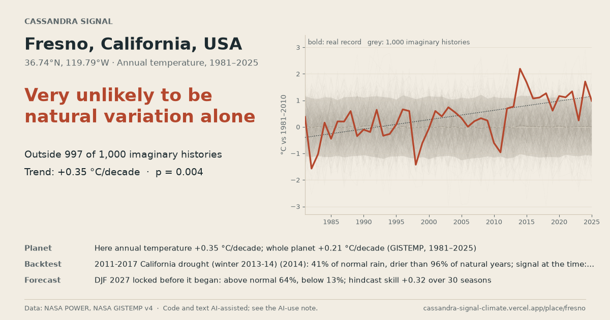
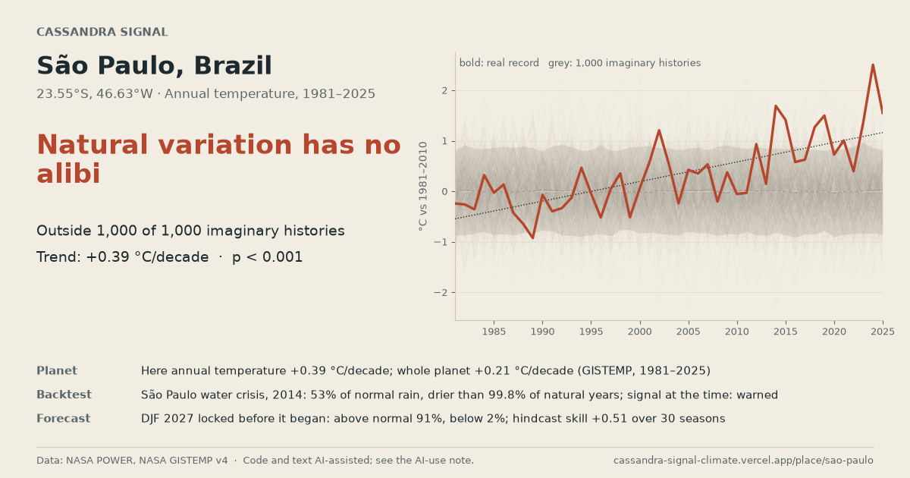
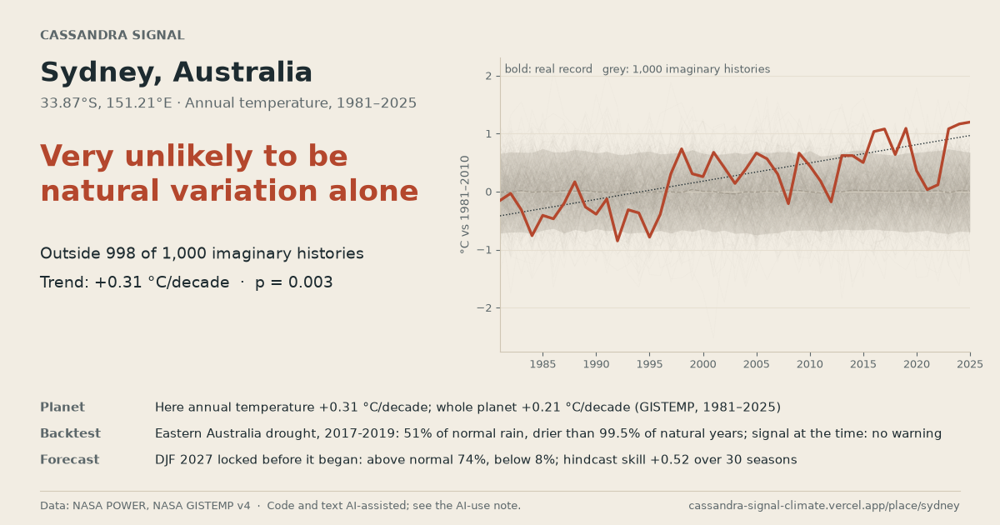
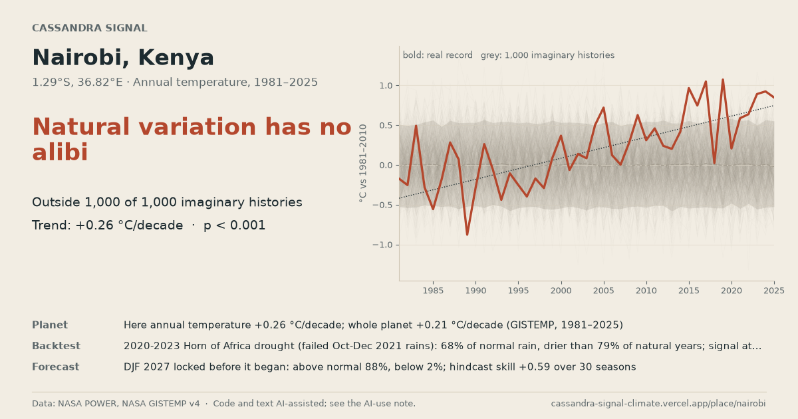
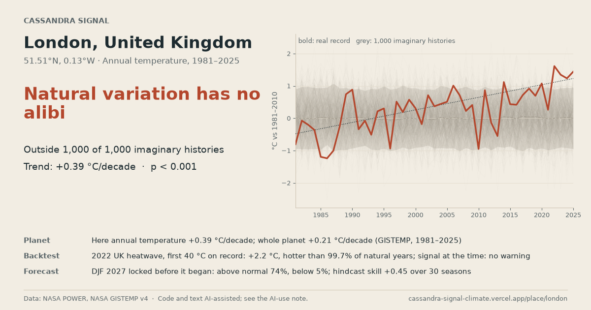
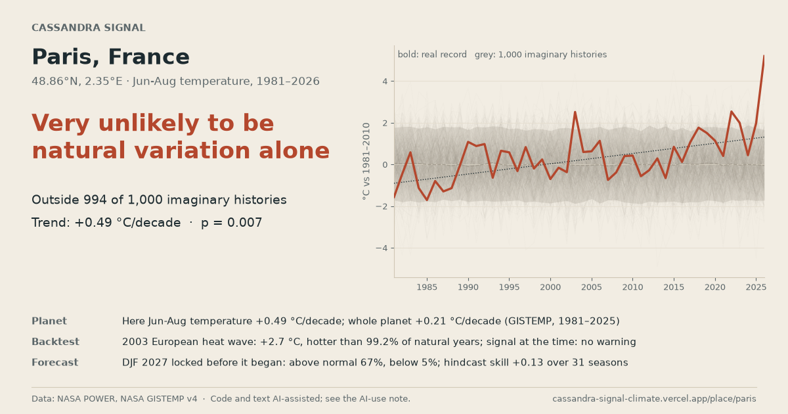
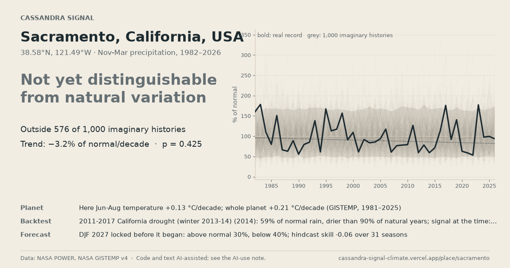
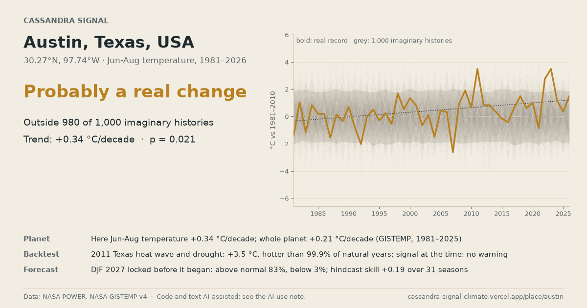
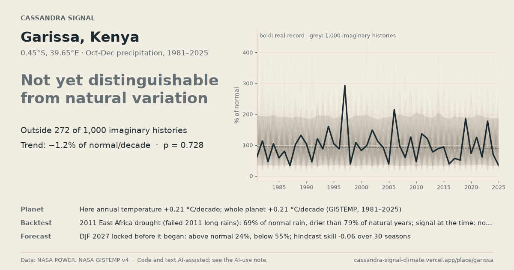
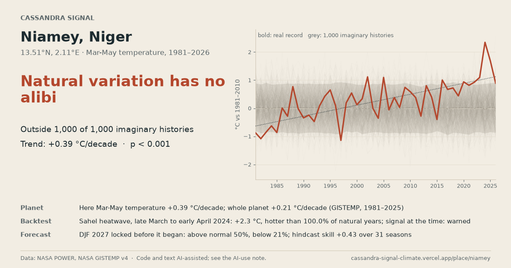
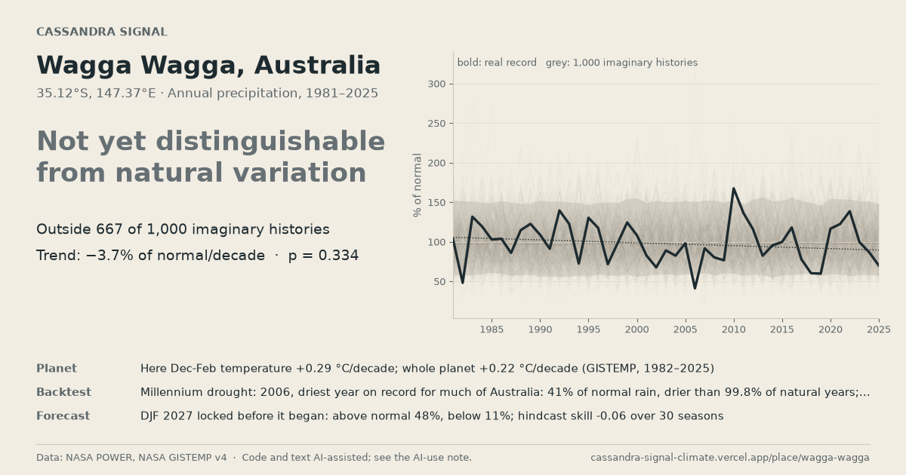
How to read a card
- The verdict in plain words. Red: natural variation almost certainly can't explain it (beyond 990 of 1,000 histories). Amber: probably a real change (beyond 950). Grey: not yet distinguishable. We never force a signal.
- The chart: the bold line is the real record; the grey band is where 90% of the 1,000 imaginary histories fall.
- The backtest: would the signal have warned us before a real drought or heatwave, using only the data we had then?
- The forecasts: chances of a below-, near- or above-normal season, published and fingerprinted before it starts.
Is the test itself honest?
A test that sees climate change everywhere is useless. We fed the method thousands of made-up records that have no trend at all. A fair test should cry wolf about 5% of the time at the "probably a real change" level.
| Trend-free test series (45 years each) | Flagged | False-alarm rate | 95% range |
|---|---|---|---|
| White noise (no memory) | 56 of 1000 | 6% | 4%–7% |
| AR(1) noise, lag-1 correlation 0.3 | 48 of 1000 | 5% | 4%–6% |
| AR(1) noise, lag-1 correlation 0.6 (strong memory) | 60 of 1000 | 6% | 5%–8% |
| Skewed noise like rainfall (gamma, shape 2) | 15 of 1000 | 2% | 1%–2% |
The full method, its checks and its limits.
Forecasts on the record
26 locked forecast file(s) so far: 0 scored, 26 waiting for their season's data. Each place page lists them with their commit and SHA-256 fingerprint.